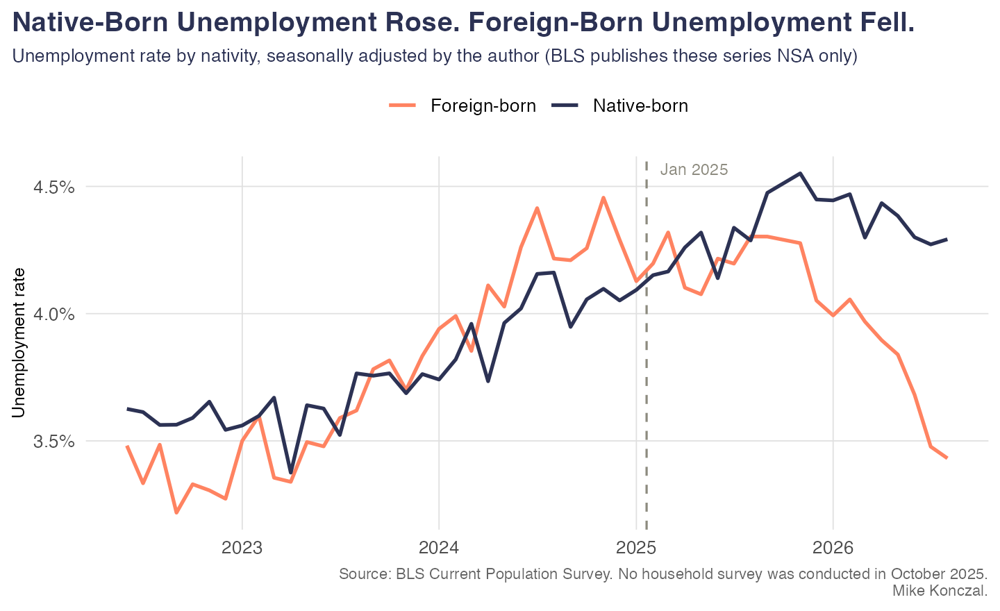
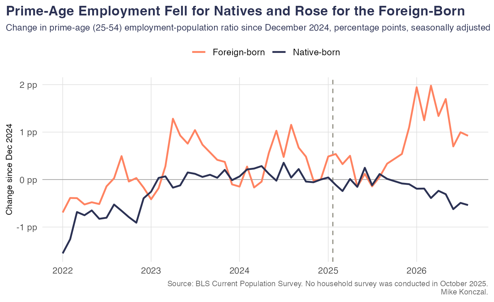
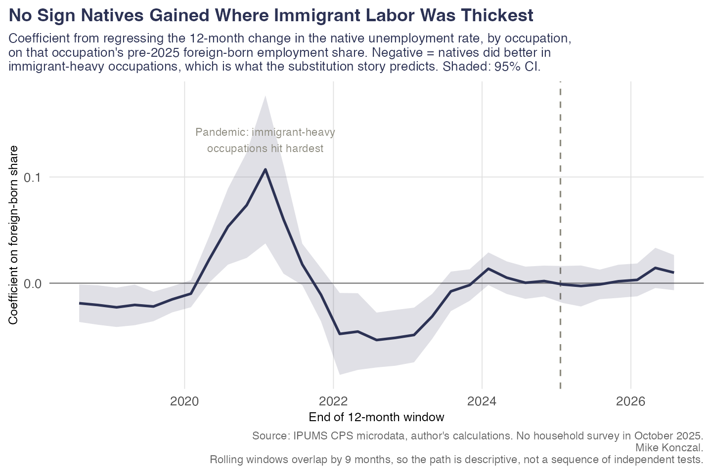
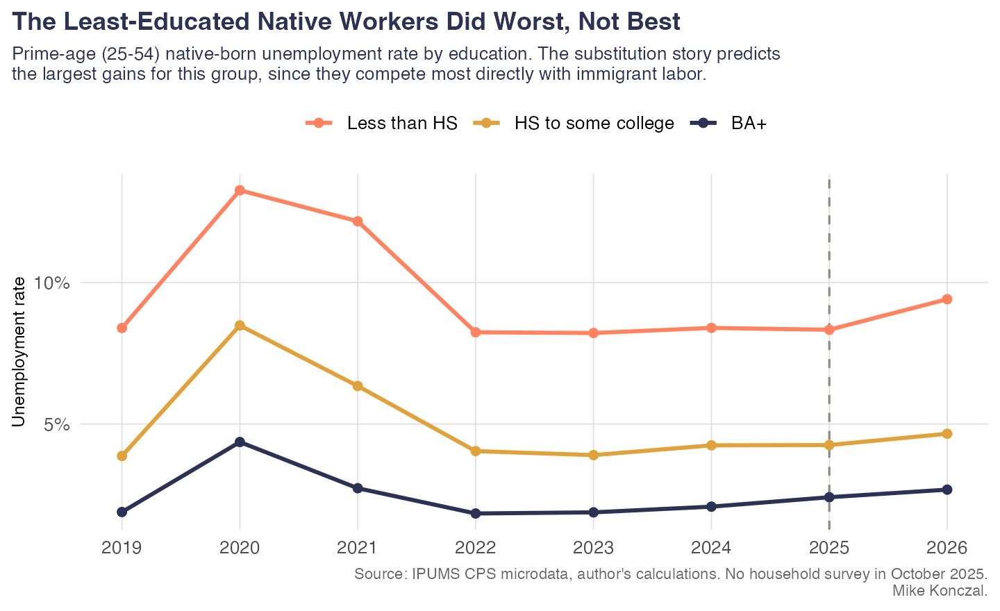
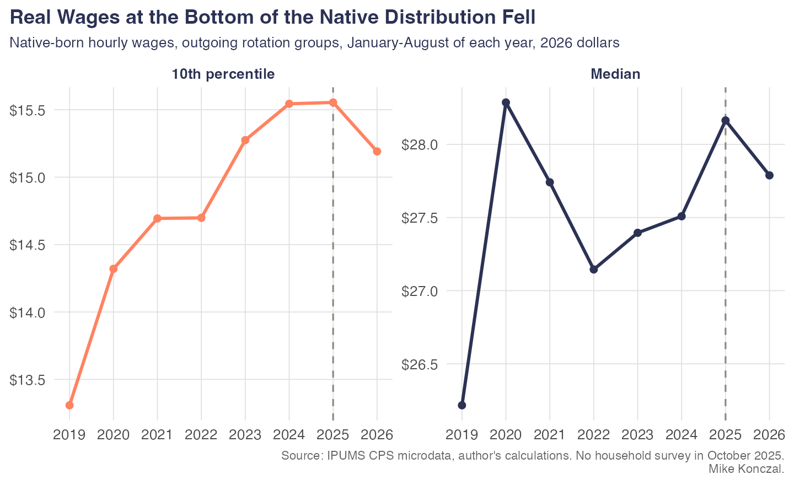
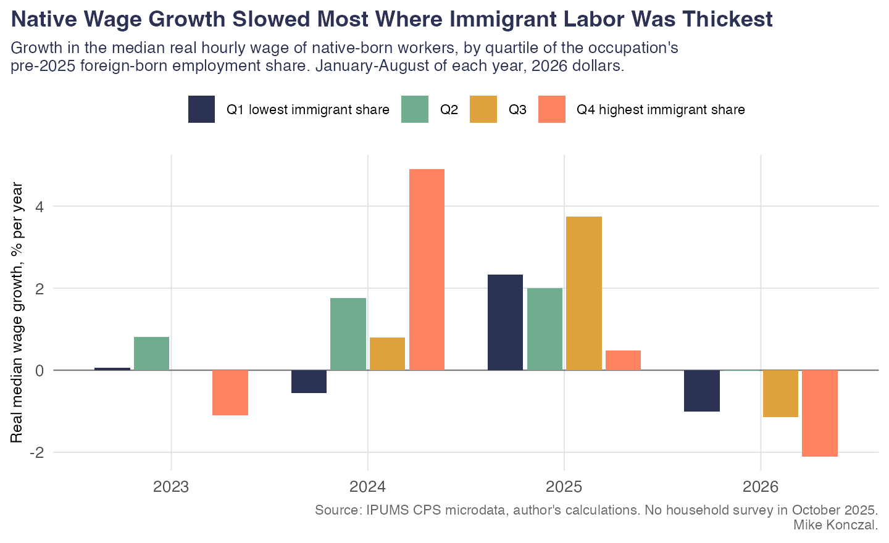
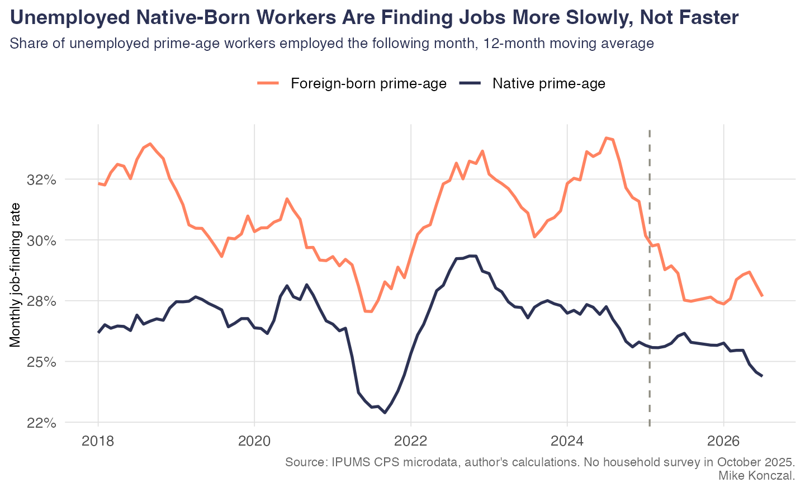

Findings memo
Did Native-Born Workers Benefit from the 2025–26 Deportation Campaign?
Seven claims, thirteen hypotheses, and what the CPS microdata actually show.
Bottom line
The restrictionist case makes seven falsifiable predictions about native-born workers. All seven run the wrong way in the data. Native-born unemployment rose, prime-age employment fell, job-finding slowed, involuntary part-time rose, real wages fell at the bottom, and the least-educated native workers, the ones the theory says should gain most, did worst. The labor market did not tighten; it loosened. The clearest single casualty is a group the theory never mentions: Hispanic U.S. citizens, whose unemployment rose about three times as much as that of other native-born citizens.
The seven claims
| # | The claim, as its proponents make it | Tests | Verdict |
|---|---|---|---|
| C1 | Fewer immigrant workers competing means native unemployment falls. Hypothesis: Native unemployment rate declines after Jan 2025. Found: Native unemployment rose from 3.98% in 2024 to 4.48% in 2026, and crossed above the foreign-born rate. |
H1, H2 | REFUTED |
| C2 | Jobs immigrants held get handed to natives, so more natives work. Hypothesis: Prime-age native EPOP and LFP rise. Found: Prime-age native employment fell 0.59 points, and the rise in the native share of employment is entirely a shrinking denominator. |
H1, H3 | REFUTED |
| C3 | A tighter labor market bids up pay, especially at the bottom. Hypothesis: Native real wage growth accelerates, most at p10-p25. Found: Native real wages fell 1.33% at the median and 2.33% at the 10th percentile in 2026. |
H6 | REFUTED |
| C4 | Natives move into the occupations immigrants vacated. Hypothesis: Native outcomes improve most in high-immigrant-share occupations. Found: The dose-response coefficient on the native unemployment rate is 0.0098 (p = 0.21): slightly the wrong sign and never distinguishable from zero. |
H4 | NO EFFECT FOUND |
| C5 | With fewer competitors, unemployed natives find work faster. Hypothesis: Native job-finding rate rises; durations fall. Found: The native job-finding rate fell from 25.80% to 22.91% and mean unemployment duration lengthened 3.7 weeks. |
H7 | REFUTED |
| C6 | Employers short of labor give native workers more hours. Hypothesis: Native hours rise; involuntary part-time falls. Found: Native usual hours fell from 40.8 to 40.7 and involuntary part-time rose, most in the most immigrant-intensive occupations. |
H8 | REFUTED |
| C7 | Gains go to natives most exposed: less than a BA, high-immigrant places. Hypothesis: Dose-response by education and geography. Found: The ranking runs backwards: unemployment rose 1.02 points for natives without a high school diploma against 0.60 points for those with a BA. |
H5, H9 | REFUTED |
H1. Did native outcomes improve at all?
REFUTEDThe native-born unemployment rate rose from 3.98% to 4.48%. Prime-age native employment fell. Over the same window the prime-age foreign-born employment rate rose. Whatever happened to the labor market in 2025 and 2026, native-born workers were on the losing end of it and the foreign-born who remained were not.
| period | unrate nat | unrate for | epop nat | prime epop nat | prime epop for | lfpr nat | foreign share lf | n months |
|---|---|---|---|---|---|---|---|---|
| 2019 | 0.0378 | 0.0313 | 0.6015 | 0.8065 | 0.7728 | 0.6251 | 0.1736 | 12 |
| 2024 | 0.0398 | 0.0420 | 0.5927 | 0.8147 | 0.7800 | 0.6173 | 0.1919 | 12 |
| 2025 | 0.0431 | 0.0418 | 0.5891 | 0.8129 | 0.7796 | 0.6156 | 0.1914 | 12 |
| 2026 YTD | 0.0448 | 0.0387 | 0.5813 | 0.8087 | 0.7895 | 0.6085 | 0.1911 | 8 |
Annual averages of monthly rates. 2026 covers January through August.


H2. Is native unemployment worse than the overall labor market predicts?
NO EFFECT FOUNDThis is the honest steelman: perhaps natives did badly, but less badly than they would have. Regressing log native unemployment on log overall unemployment over 1994–2019 and predicting forward, the native rate sits essentially on its historical relationship. The same holds using the JOLTS job-openings rate on the right-hand side, which avoids the problem that natives are a rising share of the overall rate and so mechanically converge on it.
No detectable benefit and no detectable extra penalty. Native unemployment is almost exactly where the aggregate labor market says it should be. The aggregate data cannot settle the question, which is why the cross-sectional tests below carry the weight.
H3. Did natives fill the vacated jobs?
REFUTEDThe native share of employment barely moved. Decomposing it: had native employment rates held at their December 2024 level, the native share of employment would be higher than it actually is. The small rise in the native share is entirely a denominator effect, not more natives working.
H4 & H5. The dose-response tests
NO EFFECT FOUNDAggregate results invite the reply that things would have been worse otherwise. These tests difference the aggregate out. If immigrant and native labor are substitutes, native outcomes should improve more in occupations where immigrant labor was thickest. Exposure is each occupation’s foreign-born employment share averaged over 2022–2024, held fixed.
| outcome | beta | se | p | n cells | robust to reweighting |
|---|---|---|---|---|---|
| d_nat_unrate | 0.0098 | 0.0077 | 0.2051 | 365 | TRUE |
| d_nat_unrate_nc | 0.0104 | 0.0129 | 0.4201 | 351 | TRUE |
| d_nat_hrs | -0.0358 | 0.5146 | 0.9446 | 365 | TRUE |
| d_log_nat_emp | 0.0250 | 0.0749 | 0.7387 | 365 | FALSE |
| d_log_nat_emp_nc | 0.1080 | 0.0886 | 0.2238 | 351 | FALSE |
| d_log_for_emp | -0.4805 | 0.1581 | 0.0025 | 362 | FALSE |
Occupation-level regressions, weighted by pre-period native employment, HC1 standard errors. The predicted sign for the substitution story is negative for unemployment and positive for hours and employment.
A single placebo window (2018–19) is itself significant, meaning the exposure measure is correlated with the business cycle. So the design is better judged by the full path of the coefficient across rolling windows.

In the pre-pandemic tight labor market the coefficient sat near -0.020: natives did relatively better in immigrant-heavy occupations when the market was hot. In 2025–26 it is 0.009, slightly positive and never statistically distinguishable from zero. The predicted negative coefficient never appears.
H5: the education gradient runs backwards
The substitution story is most specific here. Borjas-style displacement is concentrated among workers without a college degree, who compete most directly with immigrant labor. They should gain the most.

Native workers without a high school diploma saw the largest increase in unemployment and the largest fall in employment. The ranking is the exact inverse of the prediction.
| educ grp | yr | unrate | epop | lfpr |
|---|---|---|---|---|
| BA+ | 2023 | 0.0188 | 0.8898 | 0.9069 |
| BA+ | 2024 | 0.0208 | 0.8896 | 0.9085 |
| BA+ | 2025 | 0.0241 | 0.8836 | 0.9054 |
| BA+ | 2026 | 0.0268 | 0.8837 | 0.9081 |
| HS to some college | 2023 | 0.0390 | 0.7759 | 0.8074 |
| HS to some college | 2024 | 0.0425 | 0.7747 | 0.8090 |
| HS to some college | 2025 | 0.0426 | 0.7758 | 0.8102 |
| HS to some college | 2026 | 0.0466 | 0.7707 | 0.8083 |
| Less than HS | 2023 | 0.0822 | 0.5550 | 0.6047 |
| Less than HS | 2024 | 0.0840 | 0.5544 | 0.6052 |
| Less than HS | 2025 | 0.0833 | 0.5661 | 0.6175 |
| Less than HS | 2026 | 0.0941 | 0.5298 | 0.5849 |
H6. Wages
REFUTEDHourly wages for outgoing rotation groups, deflated into 2026 dollars. Because 2026 covers only January through August, every comparison here uses January–August of each year so the seasonal composition matches.
Native real wage growth decelerated and turned negative. The bottom of the native distribution did worst: real wages at the 10th percentile fell 2.3% in 2026 after going flat in 2025. Claim 3 said the gains would show up here first and largest. They went the other way.

The dose-response version
If the mechanism is less competition from immigrant labor, wage gains should be concentrated in the occupations where that labor was thickest.

The opposite ranking. In the highest-exposure quartile native median wages fell 2.1% in 2026, the worst of the four quartiles, after growing nearly 5% in 2024. In the lowest-exposure quartile they fell 1.0%. Wage growth decelerated hardest exactly where the theory says it should have accelerated.
| grp | yr | p10 | p50 | g p10 | g p50 | g mean |
|---|---|---|---|---|---|---|
| Foreign-born | 2023 | 14.3549 | 24.1539 | 0.0040 | 0.0229 | 0.0597 |
| Foreign-born | 2024 | 15.0152 | 23.7412 | 0.0460 | -0.0171 | 0.0946 |
| Foreign-born | 2025 | 15.5095 | 24.8669 | 0.0329 | 0.0474 | 0.0531 |
| Foreign-born | 2026 | 14.9936 | 24.9893 | -0.0333 | 0.0049 | 0.0000 |
| Native, no BA | 2023 | 13.4364 | 21.8636 | -0.0096 | 0.0179 | 0.0156 |
| Native, no BA | 2024 | 13.8609 | 21.7225 | 0.0316 | -0.0065 | 0.0303 |
| Native, no BA | 2025 | 13.9585 | 22.4497 | 0.0070 | 0.0335 | 0.0171 |
| Native, no BA | 2026 | 14.0445 | 22.2929 | 0.0062 | -0.0070 | -0.0018 |
| Native-born | 2023 | 15.2747 | 27.3953 | 0.0392 | 0.0092 | 0.0507 |
| Native-born | 2024 | 15.5440 | 27.5085 | 0.0176 | 0.0041 | 0.0846 |
| Native-born | 2025 | 15.5540 | 28.1633 | 0.0006 | 0.0238 | 0.0196 |
| Native-born | 2026 | 15.1912 | 27.7881 | -0.0233 | -0.0133 | -0.0001 |
January-August of each year, 2026 dollars. Imputed earnings records dropped.
| grp | yr | g p10 | g p50 |
|---|---|---|---|
| Native, no BA (incl. imputed) | 2025 | -0.0091 | 0.0257 |
| Native, no BA (incl. imputed) | 2026 | 0.0209 | -0.0036 |
| Native-born (incl. imputed) | 2025 | 0.0052 | 0.0111 |
| Native-born (incl. imputed) | 2026 | -0.0273 | -0.0068 |
Note also that a wage gain, had one appeared, would have needed careful reading: when employment and hours fall at the bottom, the surviving employed are a more selected group and measured average wages rise for reasons that are not a gain to workers. That problem does not arise here, because wages fell too.
H7. Did unemployed natives find work faster?
REFUTEDThis is the sharpest refutation in the memo. If deportations opened up vacancies, the one thing that had to happen is that unemployed natives fill them faster. The opposite happened: the native job-finding rate fell, unemployment spells lengthened by more than three weeks, and long-term unemployment rose.

| grp | yr | UE | EU | EN | NE | months |
|---|---|---|---|---|---|---|
| Foreign-born prime-age | 2023 | 0.3120 | 0.0101 | 0.0262 | 0.1018 | 12 |
| Foreign-born prime-age | 2024 | 0.3158 | 0.0116 | 0.0238 | 0.0918 | 12 |
| Foreign-born prime-age | 2025 | 0.2709 | 0.0108 | 0.0237 | 0.0947 | 10 |
| Foreign-born prime-age | 2026 | 0.2973 | 0.0086 | 0.0249 | 0.0987 | 7 |
| Native prime, no BA | 2023 | 0.2670 | 0.0106 | 0.0231 | 0.0688 | 12 |
| Native prime, no BA | 2024 | 0.2516 | 0.0112 | 0.0213 | 0.0653 | 12 |
| Native prime, no BA | 2025 | 0.2596 | 0.0111 | 0.0226 | 0.0681 | 10 |
| Native prime, no BA | 2026 | 0.2304 | 0.0099 | 0.0233 | 0.0645 | 7 |
| Native prime-age | 2023 | 0.2730 | 0.0078 | 0.0180 | 0.0780 | 12 |
| Native prime-age | 2024 | 0.2580 | 0.0082 | 0.0167 | 0.0735 | 12 |
| Native prime-age | 2025 | 0.2634 | 0.0088 | 0.0181 | 0.0779 | 10 |
| Native prime-age | 2026 | 0.2291 | 0.0079 | 0.0189 | 0.0746 | 7 |
Transition rates from matched CPS records (CPSIDP). The October 2025 gap is left empty, never interpolated.
H8. Hours and involuntary part-time
REFUTEDScarce labor shows up in hours before it shows up in wages, so this is the fast-moving margin. Native usual hours fell slightly and the share of native workers on part time for economic reasons rose. Broken out by occupational exposure, involuntary part-time rose most in exactly the occupations where immigrant labor was thickest.

| yr | grp | mean uhrs | share pt | share ptecon | share ptecon wide | n |
|---|---|---|---|---|---|---|
| 2023 | Foreign-born | 39.9669 | 0.1100 | 0.0386 | 0.0443 | 62193 |
| 2024 | Foreign-born | 39.8985 | 0.1110 | 0.0432 | 0.0511 | 64800 |
| 2025 | Foreign-born | 40.0151 | 0.1099 | 0.0433 | 0.0490 | 54467 |
| 2026 | Foreign-born | 40.0842 | 0.1052 | 0.0404 | 0.0437 | 37661 |
| 2023 | Native | 40.9884 | 0.0948 | 0.0183 | 0.0204 | 294379 |
| 2024 | Native | 40.8383 | 0.1000 | 0.0202 | 0.0247 | 290618 |
| 2025 | Native | 40.7542 | 0.1018 | 0.0217 | 0.0250 | 254263 |
| 2026 | Native | 40.7035 | 0.1014 | 0.0212 | 0.0240 | 178211 |
Rising involuntary part-time concentrated in high-exposure occupations is a demand-shock signature. A labor supply contraction does the opposite.
H9 & H10. Geography and the demand channel
INCONCLUSIVE H10 REFUTEDState-level dose-response is inconclusive. Every coefficient is insignificant, the placebo window is significant, and CPS state cells are thin even at twelve-month averages. This is the weakest design in the memo and should be reported as such or cut.
| outcome | spec | beta | se | p | n |
|---|---|---|---|---|---|
| d_epop | 2025-26 | -0.0078 | 0.0253 | 0.7589 | 51 |
| d_lfpr | 2025-26 | 0.0006 | 0.0210 | 0.9787 | 51 |
| d_unrate | 2025-26 | 0.0101 | 0.0112 | 0.3708 | 51 |
| d_log_for_pop | 2025-26 | -0.2439 | 0.1924 | 0.2109 | 51 |
| d_epop | PLACEBO 2018-19 | 0.0021 | 0.0114 | 0.8519 | 51 |
| d_lfpr | PLACEBO 2018-19 | -0.0102 | 0.0108 | 0.3501 | 51 |
| d_unrate | PLACEBO 2018-19 | -0.0144 | 0.0062 | 0.0236 | 51 |
| d_log_for_pop | PLACEBO 2018-19 | -0.1153 | 0.1601 | 0.4748 | 51 |
State-level regressions, 51 cells, weighted by pre-period employment.
H10: which industries?
Splitting industries into those that employed immigrants (construction, food processing, agriculture, building services) and those that sold to them (retail, food service, personal services) separates the two mechanisms. Substitution predicts native gains in the first group. A local demand shock predicts native losses in both.
| ind grp | yr | nat unrate | nat hrs | n |
|---|---|---|---|---|
| Immigrant-employing | 2023 | 0.0466 | 41.9536 | 56499 |
| Immigrant-employing | 2024 | 0.0451 | 41.9242 | 56948 |
| Immigrant-employing | 2025 | 0.0446 | 41.6546 | 48551 |
| Immigrant-employing | 2026 | 0.0519 | 41.7915 | 33929 |
| Immigrant-serving | 2023 | 0.0482 | 39.3386 | 46720 |
| Immigrant-serving | 2024 | 0.0506 | 39.0308 | 47298 |
| Immigrant-serving | 2025 | 0.0565 | 38.8724 | 41874 |
| Immigrant-serving | 2026 | 0.0598 | 38.7590 | 28959 |
Native unemployment rose in both blocks. Natives did not gain in the industries that employed immigrants, and they lost ground in the industries that served them. That is the demand channel, not the substitution channel.
H11. Enforcement spilled onto U.S. citizens
REFUTEDEvery person in this comparison is a U.S. citizen by birth. The only difference is ethnicity and whether their parents were born abroad.

Unemployment among Hispanic U.S. citizens rose roughly 3.0 times as much as among non-Hispanic citizens. This holds for third-generation-plus citizens, whose parents were also born here, so it is not a mixed-status-household composition story alone. The theory predicts nothing like this; it is the cost of enforcement falling on people the policy was never supposed to touch.
| grp | yr | epop | lfpr | unrate | n |
|---|---|---|---|---|---|
| Native, Hispanic | 2023 | 0.7974 | 0.8282 | 0.0372 | 39554 |
| Native, Hispanic | 2024 | 0.7953 | 0.8269 | 0.0382 | 40463 |
| Native, Hispanic | 2025 | 0.8012 | 0.8352 | 0.0407 | 36769 |
| Native, Hispanic | 2026 | 0.7892 | 0.8303 | 0.0495 | 27235 |
| Native, non-Hispanic | 2023 | 0.8175 | 0.8429 | 0.0301 | 323888 |
| Native, non-Hispanic | 2024 | 0.8181 | 0.8459 | 0.0329 | 318149 |
| Native, non-Hispanic | 2025 | 0.8159 | 0.8449 | 0.0343 | 277383 |
| Native, non-Hispanic | 2026 | 0.8135 | 0.8445 | 0.0367 | 193126 |
| gen | yr | epop | lfpr | unrate | pop | n |
|---|---|---|---|---|---|---|
| 2nd gen native | 2023 | 0.8225 | 0.8518 | 0.0344 | 156827.4 | 39261 |
| 2nd gen native | 2024 | 0.8203 | 0.8531 | 0.0384 | 159619.3 | 40762 |
| 2nd gen native | 2025 | 0.8220 | 0.8558 | 0.0395 | 158942.9 | 36333 |
| 2nd gen native | 2026 | 0.8155 | 0.8540 | 0.0451 | 120876.5 | 26088 |
| 3rd+ gen native | 2023 | 0.8147 | 0.8401 | 0.0303 | 1029750.8 | 317293 |
| 3rd+ gen native | 2024 | 0.8148 | 0.8424 | 0.0328 | 1025411.6 | 311197 |
| 3rd+ gen native | 2025 | 0.8128 | 0.8416 | 0.0342 | 949129.5 | 271956 |
| 3rd+ gen native | 2026 | 0.8094 | 0.8409 | 0.0376 | 679779.1 | 189908 |
| Foreign born | 2023 | 0.7844 | 0.8118 | 0.0338 | 323665.7 | 79976 |
| Foreign born | 2024 | 0.7805 | 0.8128 | 0.0397 | 334853.9 | 83341 |
| Foreign born | 2025 | 0.7812 | 0.8136 | 0.0399 | 310647.0 | 69819 |
| Foreign born | 2026 | 0.7907 | 0.8202 | 0.0360 | 220438.6 | 47619 |
By generation. NATIVITY distinguishes native-born citizens with foreign-born parents from those with native-born parents.
H12. Did the labor market actually tighten?
REFUTEDThe entire substitution story requires tightness. A labor supply contraction against stable demand raises vacancies per unemployed worker and raises quits. Both fell.

A supply-driven tightening and a demand-driven slowdown are distinguishable, and this is the cleanest aggregate discriminator available. The labor market loosened.
H13. What the CPS can and cannot measure
Three separate problems with CPS nativity levels, in increasing order of severity.
1. The January population controls
The CPS resets population controls each January and does not revise prior months. The January 2025 reset was unusually large because Census changed its net-international-migration methodology.
| date | d for | d nat |
|---|---|---|
| 2019-01-01 | -76 | -572 |
| 2020-01-01 | -76 | -604 |
| 2021-01-01 | 139 | -518 |
| 2022-01-01 | 452 | 615 |
| 2023-01-01 | 163 | 954 |
| 2024-01-01 | -505 | 54 |
| 2025-01-01 | 1598 | 1450 |
| 2026-01-01 | 845 | -986 |
December-to-January discontinuities in the published population level, thousands. These are revisions, not behavior.
2. Nativity is not a population control
This is the binding constraint, and it is Kolko’s central point. Census sets controls by age, sex, and race, never by nativity. Nativity comes from the survey answer. When foreign-born respondents leave the sample, their weight is redistributed inside their age-sex-race cell, much of it onto native-born respondents. Measured native-born employment rises mechanically. The two series are forced to sum to a predetermined total.
3. Non-citizens stopped answering the survey
Unweighted respondent counts carry no weights at all, so they are immune to both problems above. They isolate the survey-participation channel directly.
| group | avg 2024 | avg recent | pct change |
|---|---|---|---|
| Non-citizens | 6029 | 4979 | -17.4 |
| Naturalized citizens | 6176 | 6020 | -2.5 |
| Native-born | 69047 | 65154 | -5.6 |
| All respondents 16+ | 81252 | 76154 | -6.3 |
Unweighted CPS respondents age 16+, 2024 monthly average versus September 2025 to August 2026 monthly average.

Non-citizen respondents fell 17.4% while the whole CPS sample fell 6.3%, an excess decline of about eleven points. This closely replicates the St. Louis Fed’s finding of a 16.6% versus 6.2% split for January–November 2025, and it was produced independently here from raw interview counts. A large share of the apparent foreign-born decline is people declining to be surveyed, not people leaving the country.
Rates survive all three problems. Weight redistribution inside an age-sex-race cell scales employed and unemployed natives up roughly proportionally, leaving the native unemployment rate intact. That is why every conclusion in this memo is a rate.
What this does not establish
None of this is a clean natural experiment. Enforcement intensity is correlated with local immigrant share, industry mix, and politics, and nothing here randomizes it. The occupational dose-response design has a pre-trend: its 2018–19 placebo is significant, which is why the rolling-window path is shown rather than a single difference. The state-level design is underpowered. The honest summary is that the restrictionist theory makes seven specific predictions about native-born workers, and the data refuse to deliver any of them, in an environment where the theory’s own precondition, a tightening labor market, did not hold.
The strongest affirmative claim available is the negative one: after eighteen months, there is no measurable benefit to native-born workers on any margin the theory names, and there is a measurable cost to Hispanic U.S. citizens that the theory does not.
Sources and method notes
- IPUMS CPS basic monthly, January 2015 – August 2026, 12,545,329 person-month records age 16+.
Native-born is
CITIZENin {1,2,3}, matching the BLS definition. Weighted totals validate against published BLS nativity series within roughly 0.5%. - Jed Kolko, “No, Native-Born Employment Has Not Soared” and “Your Guide to Immigration and the Jobs Report”, on why nativity levels mislead and rates do not. Kolko also publishes historically comparable CPS weights (April 2010 – December 2024), which fix cross-year comparability but do not address the 2025–26 period.
- St. Louis Fed, “What Is Affecting the CPS Data on Shifts in Immigrant and Native-Born Populations?”, December 2025, on survey non-response versus actual departures.
- No household survey was conducted in October 2025. That month is left empty in every series and is never interpolated. Month-to-month flows are unavailable for two links.
- Nativity series are published seasonally unadjusted; seasonal adjustment here is the author’s, via X-13. Conclusions are also checked against twelve-month moving averages.
- Literature to verify before publication: Clemens, Lewis and Postel (2018, AER) on the Bracero exclusion, and East, Luck, Mansour and Velásquez (2023) on Secure Communities. Both point the same direction as these results; neither has been re-read for this memo and the point estimates should not be quoted from memory.